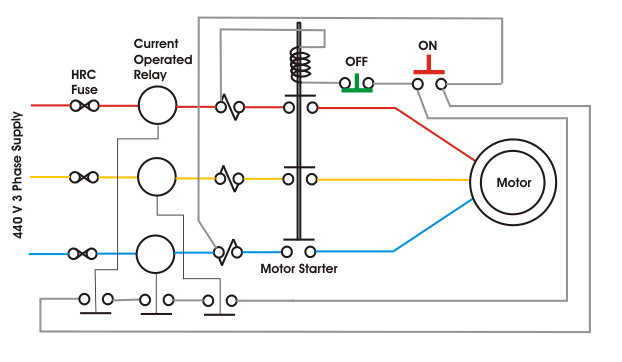

Large Motor Protection
• Motor Bearing Failure
• Motor Over Heating
• Motor Winding Failure
• Reverse Motor Rotation
The electric motor is most essential drive in modern era of industrialization. From fractional hp AC motor used for different home appliances to giant synchronous motor and induction motor of up to 10,000 hp used for different industrial applications, should be protected against different electrical and mechanical faults for serving their purposes smoothly. The motor characteristics must be very carefully considered in selecting the right motor protection scheme.
The abnormalities in motor or motor faults may appear due to mainly two reasons -
- Conditions imposed by the external power supply network,
- Internal faults, either in the motor or in the driven plant.
Unbalanced supply voltages, under-voltage, reversed phase sequence and loss of synchronism (in the case of synchronous motor) come under former category. The later category includes bearing failures, stator winding faults, motor earth faults and overload etc.
The degree of motor protection system depends on the costs and applications of the electrical motor.
Small Motor Protection Scheme
Generally motors up to 30 hp are considered in small category. The small motor protection in this case is arranged by HRC fuse, bimetallic relay and under voltage relay - all assembled into the motor contractor - starter itself.
Most common cause of motor burn outs on LV fuse protected system is due to single phasing
. This single phasing may remain undetected even if the motors are protected by conventional bimetallic relay. It can not be detected by a set of voltage relays connected across the lines. Since, even when one phase is dead, the motor maintains substantial back emf on its faulty phase terminal and hence voltage across the voltage relay is prevented from dropping - off.
The difficulties of detecting single phasing can be overcome by employing a set of three electric current operated relays as shown in the small motor protection circuit given below.
The electric current operated relays are very simple instantaneous relays. There are mainly two parts in this relay one is a electric current coil and other is one or more normally open contacts (NO Contacts). The NO contacts are operated by the mmf of the electric current coil. This relay is connected in series with each phase of the supply and backup by HRC fuse. When the electrical motor starts and runs the supply electric current passes through the electric current coil of the protective relay. The mmf of the electric current coil makes the NO contacts closed. If suddenly a single phasing occurs the corresponding electric current through the electric current coil will falls and the contacts of the corresponding relay will become to its normal open position. The NO contacts of the all three relays are connected in series to hold - in the motor contractor. So if any one relay contact opens, results to release of motor contractor and hence motor will stop running.

Large Motor Protection
Large motor specially induction motors require protection against-
Motor Bearing Failure
Ball and roller bearings are used for the motor up to 500 hp and beyond this size sleeve bearings are used. failure of ball or roller bearing usually causes the motor to a standstill very quickly. Due to sudden mechanical jamming in motor bearing, the input electric current of the motor becomes very high. Current operated protection, attached to the input of the motor can not serve satisfactorily. Since this motor protection system has to be set to override the high motor starting current. The difficulty can be over come by providing thermal over load relay. As the starting electric current of the motor is high but exists only during starting so for that electric current the there will be no over heating effect. But over electric current due mechanical jamming exists for longer time hence there will be a over heating effect. So stalling motor protection can be offered by the thermal overload relay. Stalling protection can also be provided by separate definite time over electric current relay which is operated only after a certain predefined time if over electric current persists beyond that period. In the case of sleeve bearing, a temperature sensing device embedded in the bearing itself. This scheme of motor protection is more reliable and sensitive to motor bearing failure since the thermal withstand limit of the motor is quite higher than that of bearing. If we allow the bearing over heating and wait for motor thermal relay to trip, the bearing may be permanently damaged. The temperature sensing device embedded in the bearing stops the motor if the bearing temperature rises beyond its predefined limit.
Motor Over Heating
The main reason of motor over heating that means over heating of motor winding is due to either of mechanical over loading, reduced supply voltage, unbalanced supply voltage and single phasing. The over heating may cause deterioration of insulation life of motor hence it must be avoided by providing proper motor protection scheme. To avoid over heating, the motor should be isolated in 40 to 50 minutes even in the event of small overloads of the order of 10 %. The protective relay should take into account the detrimental heating effects on the motor rotor due to negative sequence currents in the stator arising out of unbalance in supply voltage. The motor should also be protected by instantaneous motor protection relay against single phasing such as a stall on loss of one phase when running at full load or attempting to start with only two of three phases alive.
Motor Winding Failure
The motor protection relay should should have instantaneous trip elements to detect motor winding failure such as phase to phase and phase to earth faults. Preferably phase to phase fault unit should be energized from positive phase sequence component of the motor electric current and another instantaneous unit connected in the residual circuit of the current transformers be used for earth faults protection.
Reverse Motor Rotation
Specially in the case of conveyor belt, the reverse motor rotation must be avoided. The reverse rotation during starting can be caused due to inadvertent reversing of supply phases. A comprehensive motor protection relay with an instantaneous negative sequence unit will satisfy this requirement. If such relay has not been provided, a watt-meter type relay can be employed.
NB: However, we have to provide some additional motor protection system for synchronous motor which is discussed in details in synchronous motor protection topic.
 by
by